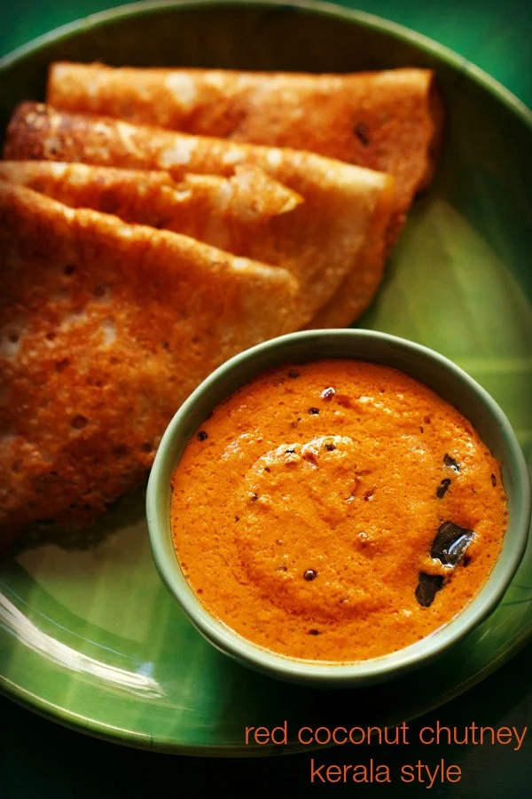

Red Coconut Chutney (Kerala Style)

Red coconut chutney recipe with step by step pics – a bright red colored Kerala style coconut chutney for idli, dosa and uttapam.
Ingredients
For Chutney
- ½ cup Desiccated Coconut
- 1 Small Onion 3-4 Shallots
- 3-4 Dried Red Chillies
- Marbled Sized Ball of Tamarind
- Salt as needed
- ¼ cup Hot Water adjust as needed
For Tempering
- 1 teaspoon Oil
- ½ teaspoon Mustard Seeds
- ½ teaspoon Cumin Seeds
- ½ teaspoon Urad Dal
- Two Large Pinches Asafoetida
- Fresh Curry Leaves
Directions
- In blender jar add desiccated coconut along with hot water and let it sit for 5 mins. This will get the coconut refreshed.
- Add chopped onions/shallots, dried red chillies, tamarind and salt.
- Blend until smooth. Adjust water as needed to make chutney.
- Remove onto bowl. Meanwhile, heat oil for tempering. Add mustard seeds, cumin seeds, urad dal. As they turn golden and begin popping, add asafoetida and fresh curry leaves. Add it to the chutney.
- Serve as a side dish for any breakfast recipe.
Home